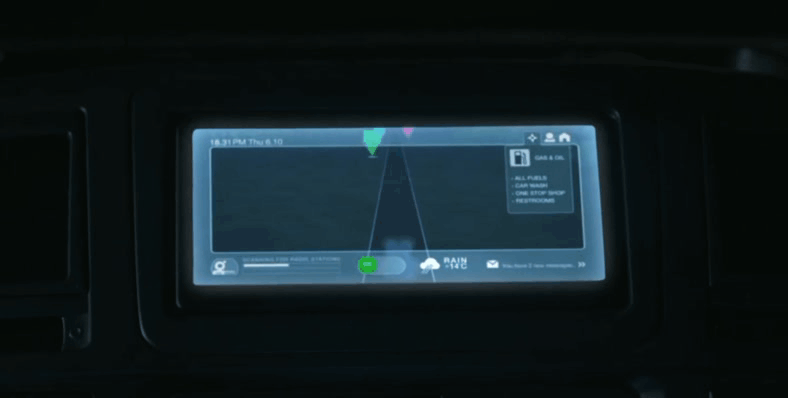
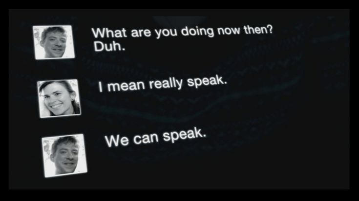
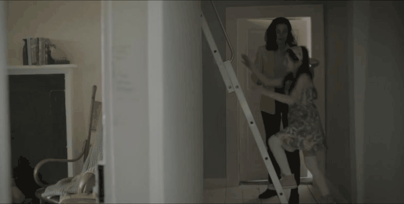
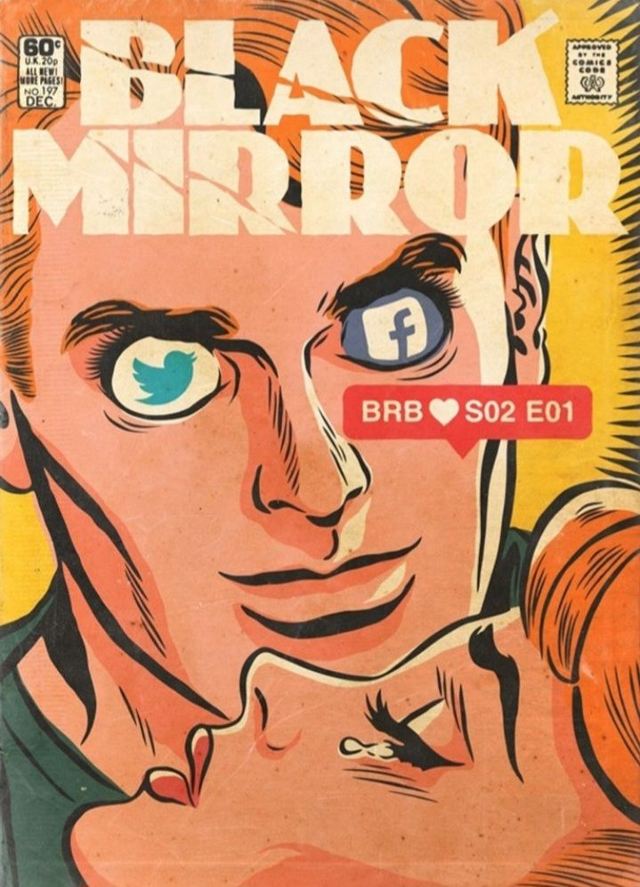
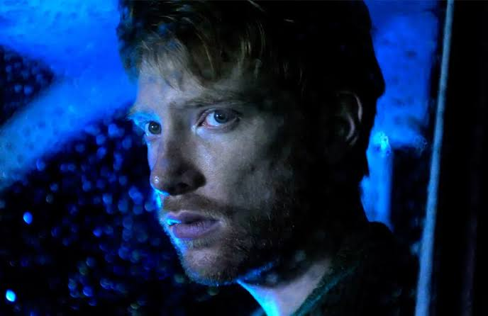

#EleNuncaSaiu
Após a morte de Ash (Domhnall Gleeson), sua namorada grávida, Martha (Hayley Atwell), experimenta um serviço que usa os dados online de Ash para criar uma imitação de IA.

Ela interage com a IA por mensagens e chamadas de vídeo. Uma versão física em androide de Ash é perturbadora para Martha.

Anos depois, sua filha leva um bolo para o androide Ash, que é guardado no sótão e visitado apenas nos fins de semana.

O episódio acontece um ano após "Hino Nacional”, com uma manchete de TV mencionando "Geraint Fitch absolvido de irregularidades após briga com paparazzi”, que também aparece em "O Momento Waldo”.
A animação do teste de gravidez é a mesma de "Natal”.
A música "Anyone Who Knows What Love Is (Will Understand)” é tocada em "Pessoas Comuns”.
"Volto Já” explora as profundezas do luto e a busca por conexão em um mundo onde a tecnologia oferece um substituto para a perda.
A decisão de Martha de manter uma versão "ideal” de Ash no sótão, em vez de confrontar a realidade imperfeita de seu relacionamento, sugere uma forma de controlar ou curar suas memórias. O episódio questiona se a tecnologia pode verdadeiramente preencher o vazio deixado pela morte, ou se apenas prolonga o processo de luto e isolamento. A história sugere que a IA, apesar de sua capacidade de simular a personalidade e as memórias de uma pessoa, não pode replicar a totalidade da experiência humana, especialmente a capacidade de crescimento e mudança. A vulnerabilidade das emoções humanas diante da IA é um tema central, com a tecnologia sendo um meio para a exploração do poder, como visto na forma como a consciência de uma pessoa pode ser "usada” para conveniência.
Os temas incluem luto, inteligência artificial, redes sociais, a natureza da identidade, a exploração da privacidade e a vulnerabilidade das emoções humanas diante da IA.
Martha Powell (Hayley Atwell): A protagonista em luto que busca conforto na tecnologia.

Ash Starmer (Domhnall Gleeson): O namorado falecido, recriado como uma IA e depois como um androide.
❝Desculpe, espere, essa é uma frase muito difícil de processar.
— Ash (IA)
Revela a artificialidade da IA.
❝Confie em mim; aquele dia não foi doce... primeira saída em família depois que Jack morreu... Quando desci na manhã seguinte, todas as fotos de Jack haviam sumido... ela as colocou no sótão. É assim que ela lidava com as coisas. E então, quando o pai morreu, as fotos dele foram para o sótão. Ela só deixou esta aqui. Seu único filho dando-lhe um sorriso falso.
— Ash (IA)
Uma lembrança dolorosa do passado de Ash, processada pela IA.
❝Não me chame de sua administradora.
— Martha
O desconforto de Martha com a natureza transacional da relação.
❝[começa a chorar] Por favor, não me faça fazer isso. Não.
— Ash (IA)
A simulação de emoções pela IA.
Data de Estreia:
01 Fev 2013
Duração:
49:04
Escritor:
Charlie Brooker
Diretor:
Owen Harris